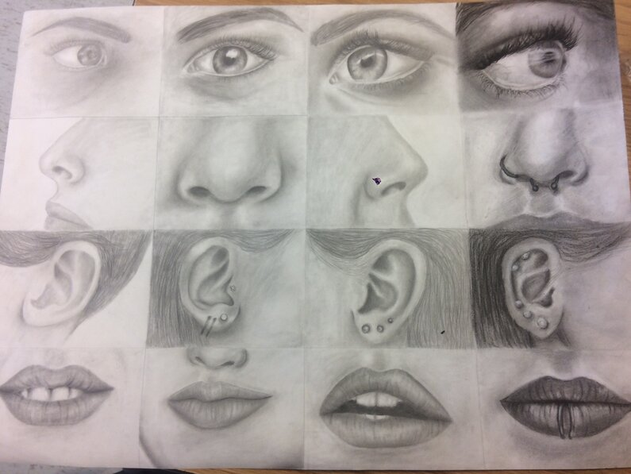

Now some may question why use this website? Why use something other than just Instagram or YouTube? Some may look at this as an unnecessary step. But if you are truly looking to help gain more discoveries to your work, you will use every resource that you can. This is a perfect place to be able to display every single piece of art you wish to put on there without the distraction of other social media accounts getting in the way of yours. It's perfect because you can send the link for your online art portfolio directly to your boss without having to lug those many heavy canvases and papers with you. You will be able to pull up your website during a job interview with just an easy click of a button. You will be able to send your websites link to friends and family through text or email. The process is very easy and simple to do. You will be able to design it how you wish too. Put however many pieces of art you want too. It just starts with actually creating it. This might be troubling for some not knowing what it should look like. So down below will be an example of what your website might look like. I have used my own art to create an online art portfolio to help artists understand just how easy it can be. How simple it is to display your lives work for people to connect, love and buy. So, take a look, scroll to see what you like and click that button to start creating your own online art portfolio.
